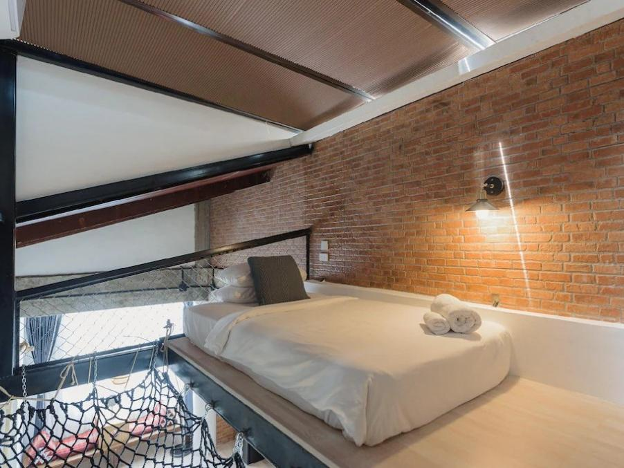
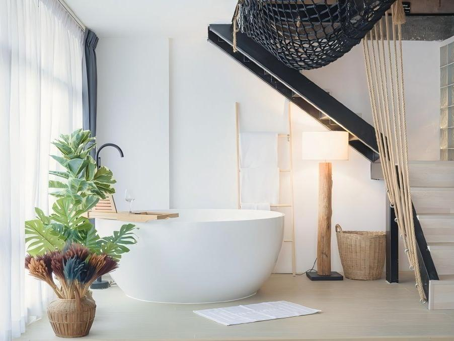

60 m2 / Sleeps up to 3
Aloft Suite
A two-story suite with a 1.8 m king bed and 1.2 m single bed, perfect for couples or small families. Downstairs, a bright open lounge and freestanding bathtub look toward the garden; upstairs, a cozy loft-style sleeping area brings privacy and a little starlit drama.
Wi-Fi
Air-conditioning
Cable TV
Soundproofing
Book This Room